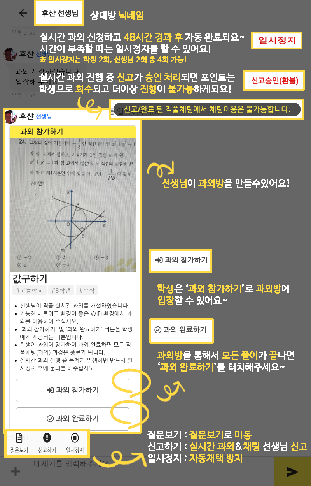

영어 문장에서 주어동사는 엄청 중요해요. 문제를 푸실때 항상 유의 해주세요. 아시겠죠?
2019-01-29 17:00
질문보기
과외 시작
신고하기
일시정지
일시정지해제
마톡 실시간 과외 시작하기
실시간 과외를 시작하면 실시간 과외 스터디룸으로 접속이 되며 학생에게 참여 할 수 있는 버튼이 호출됩니다.
수업이 완료되고 난 후, 학생이 과외 완료하기를 하면 포인트 거래가 이루어 집니다.
학생이 참여하기 전까지 최대
30초
정도의 시간이 지연될 수 있습니다.
해당 문제에 대한 실시간 과외는
유효기간(3일)에 한정하여 무제한
으로 진행할 수 있습니다.
시스템 오류 및 학생, 선생님의 일정 등의 이유로 실시간 과외를 못하는 경우
일시정지
를 진행하여 주십시오.
반드시
해당 질문과 답변
에 대한 내용으로 수업을 진행하여 주십시오.
실시간 과외 시작하기
과외 일시정지 하기
일시정지는 시스템 오류 및 학생과 선생님의 개인 일정 등의 이유로 인하여 해당문제에 대한 과외를 유효기간 내에 진행할 수 없을 경우 해당
과외를 일시정지
시키는 기능입니다.
일시정지 후에는 마톡채팅(실시간 과외)가
자동완료가 되지 않습니다.
일시정지 후에도
시스템 확인 목적
으로 실시간 과외는 진행이 가능합니다.( 과외 포인트 거래는 되지 않음. 반드시 일시정지 해제 후 정상진행 요망 )
학생, 선생님 각각
2회
씩 일시정지가 가능하며 일시정지 해제는 학생, 선생님
모두
가능합니다.
반드시 상대방과
협의
후, 일시정지를 진행하여 주십시오.
일시정지 하기
과외 일시정지 해제하기
일시정지 해제 후 마톡 채팅(과외)의 유효기간은
2일
입니다.(해제 날짜 기준) 2일 이내에 과외를 완료하여 주십시오.
반드시 상대방과
협의
후, 일시정지 해제를 진행하여 주십시오.
일시정지 및 일시정지 해제는 학생, 선생님
모두 가능
합니다.
일시정지 해제 후에도 실시간 과외 진행이 불가능한 경우( 시스템 오류 )
1대1 문의하기
를 통해 알려 주십시오.
일시정지 해제하기
마톡 채팅(과외) 완료하기
*
후기 작성
특수문자는 사용할 수 없습니다
0
/ 150
마톡 채팅을 완료하면 마톡 채팅 및 실시간 과외의 모든 과정이
종료
됩니다.
작성한 후기글은 선생님 및 답변에 대한
기초 평가
로 사용됩니다.
마톡 채팅(과외) 완료하기

다시 보지 않기
닫기
Loading...